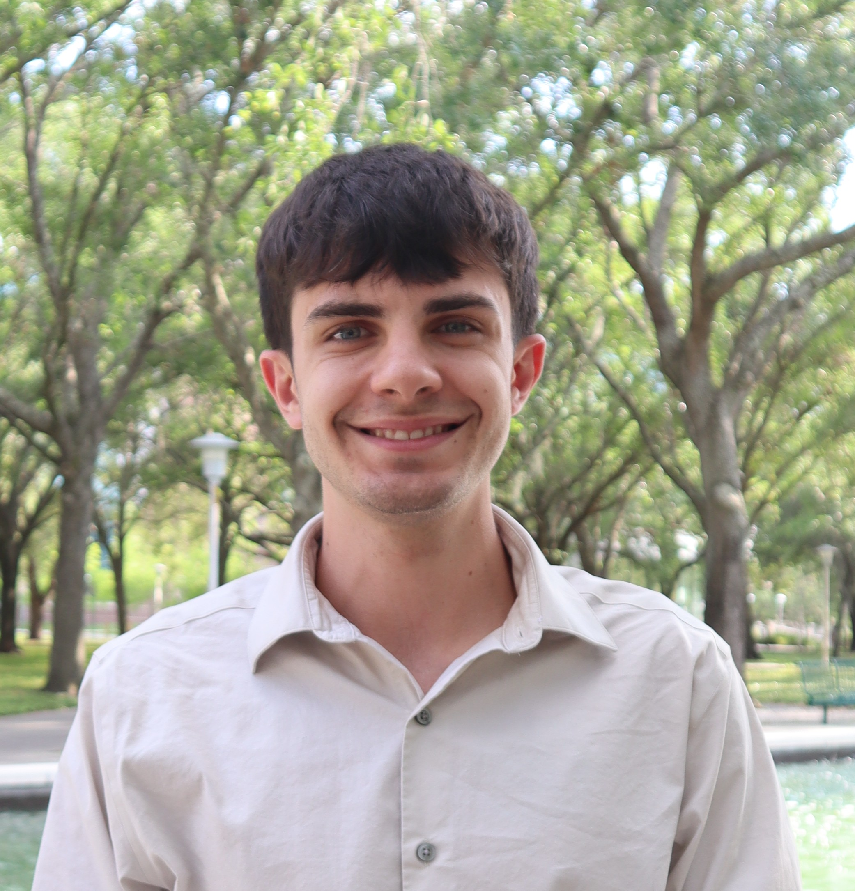
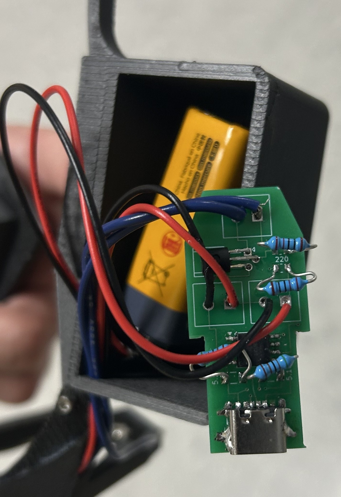

My goal is to solve problems. I enjoy designing and fabricating prototypes that are used for functions no one has thought of before. Welcome to my portfolio.

I'm a Master of Engineering student in Biomedical Engineering at the University of Florida, focusing on neuroscience and neuroengineering research.
I am currently working on a project focusing on the neurological response to various forms of 40Hz stimuli. I design and conduct data collections, use various tools for data analysis, and fabricate the prototypes needed to produce the stimulation.
I also guide a team of undergraduate students that collaborate on the project. I help them through design iterations, data summaries, and presentations.
Outside of academics I enjoy exploring the outdoors through camping, hiking, scuba diving, and surfing.

Using KiCAD I designed a custom PCB to power and operate flickering infrared glasses used in research.
Describe your design, the problem it solves, and your engineering approach. Mention any collaborators, publications, or outcomes.
Describe your design, the engineering challenge, and what you learned. Add links to GitHub, a paper, or a demo if available.
Describe your research responsibilities here. Focus on impact — what did you build, discover, or improve? Quantify if possible (e.g. "reduced processing time by 40%").
Describe your internship here. What did you work on? What tools and methods did you use? What was the outcome of your contribution?
Describe your undergraduate research. What techniques did you learn? Did you contribute to any publications or presentations?
Add more past experience here. You can add as many timeline items as needed.
Fascinated by brain-computer interfaces, neuroprosthetics, and the future of human-machine communication at the neural level.
Replace this with a real personal interest. Keep it genuine — it makes you memorable to recruiters and collaborators.
Believe deeply in making complex engineering concepts accessible. Currently [writing a blog / running a club / something you do].
Add another personal interest here. The more specific, the better — "jazz piano" is more interesting than "music."
Interested in low-cost medical devices designed for resource-limited settings and the intersection of engineering and public health equity.
Love building things. From tinkering with microcontrollers to machining parts — the physical craft of engineering excites me.
Looking for a full-time position in protoyping,
medical devices, or research & development.
Available October 2026.